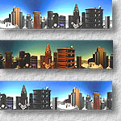
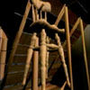
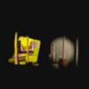
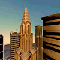

 Interactive Relighting of Panoramas
, and ,
IEEE Computer Graphics & Applications, Vol. 21, No. 2, March-April 2001, pp 32-41.Abstract
- Due to the simplicity and efficiency of panoramic image representation, it has been successfully applied to Internet applications to provide an immersive illusion within a real or synthetic environment. However, once a scene has been captured as image, the lighting condition can no longer be adjustable. As the illumination adjustment is one key capability in computer graphics, we describe in this article a panoramic image representation which allows us to incorporate the illumination information into the panorama. Scenes represented by this representation not just allow panning, tilting and zooming, but also allow interactive adjustment of lighting condition. An interactive panoramic viewer is developed to demonstrate the feasibility and applicability of the proposed representation.
Interactive Demo
- Click here for downloading and installing the demo program.
Movies
The following movies demonstrate the result of re-lighting panorama with different types of light sources.
 A movie showing the screen capture of the perspective display of an indoor panorama, attic. The image-based scene is re-lighted by a directional light source. (Size: 4.87MB)
 The same attic scene re-lighted by a spotlight and a slide projector light source. (Size: 4.93MB)
 This movie shows the screen capture of re-lighting a panorama which represents an outdoor environment. It mimics the natural illumination throughout the whole day. (4.59MB) Download Paper
- Acrobat: pano.pdf (size: 6.08MB)
Related Publications